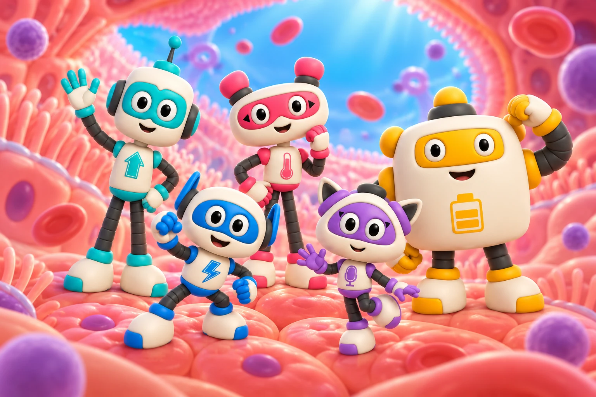
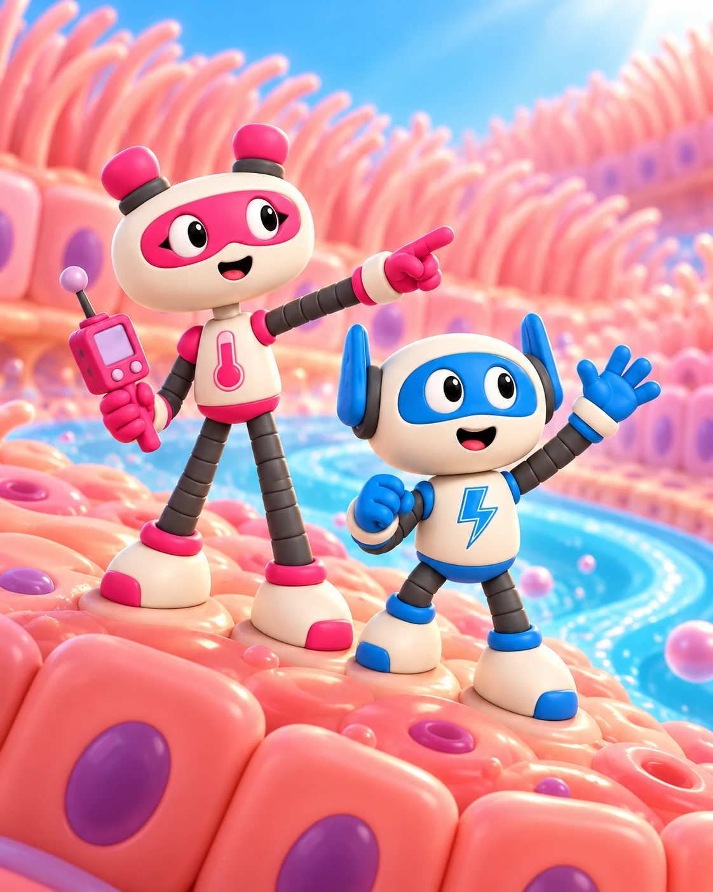

Большая аудитория маленьких приключений
Анимационная вселенная для всей семьи
Маленькие герои
Большие возможности
Объясняем детям, как работает их тело.
Превращаем знания в приключения.
Создаём полезные проекты вместе с брендами.
Презентация · 14 слайдов · Обновлено 24.10.2026

Для брендов, образовательных проектов и СМИЛистайте, знакомьтесь
01 Знакомьтесь, НАНОБОТЫ
Открываем вселенную,
которая всегда с нами
Внутри учёного-изобретателя Петра живёт команда наноботов. Они охраняют его здоровье, а каждый симптом превращают в увлекательное приключение.
Комедия, открытия и понятная наука помогают детям и родителям вместе узнавать, как устроен человеческий организм.
- Для кого
- Дети 6 – 14 лет
и их родители - Формат
- 2D- и 3D-анимация
и короткие ролики - В основе
- Научная и медицинская
проверка контента

Приключения внутри тебя Смотреть в VK Видео02 НАНОБОТЫ в цифрах
Истории, которые
смотрят миллионы
Данные команды проекта
Суммарно на площадках проекта
Просмотры и подписчики — совокупные показатели проекта, по данным команды. Просмотры не равны числу уникальных зрителей.
Одна вселенная — разные зрители
Кто нас смотрит
Обновлено 24 октября 2026
Ориентировочный портрет по статистике площадок. Каждая площадка имеет равный вес в расчёте.
≈67%
аудитории 18+
в возрасте 25–44 лет
Возраст среди аудитории 18+
- 18–24 года20%
- 25–34 года41%
- 35–44 года26%
- 45–54 года7%
- 55 лет и старше6%
Среднее по YouTube, Instagram и TikTok.
Доли пересчитаны внутри группы 18+.
≈6%
13–17 летСредняя доля во всей аудитории YouTube и Instagram. В TikTok эта группа не показана.
- Россия≈25%
- Казахстан≈19%
- Украина≈13%
- Другие страны≈43%
Среднее по YouTube, Instagram и TikTok. Три страны, доли которых указаны на всех трёх площадках; остальные объединены.
Города во ВКонтактеМосква — 31% · Санкт-Петербург — 14,2%
Распределение по полу
Расчётная оценкаЖенщины51,6%
Мужчины48,0%
0,4% — другие категории и неуказанный пол
Среднее по YouTube, Instagram, TikTok и ВКонтакте. Значения округлены до десятых.
Как рассчитаны показатели и какие данные использованы
Общий принцип — среднее арифметическое долей: каждая площадка имеет одинаковый вес. Размеры сопоставимых аудиторий не предоставлены, поэтому это усреднённый портрет площадок, а не доли всей уникальной аудитории проекта. В источниках смешаны просмотры, подписчики и аудитория аккаунтов.
Возраст — YouTube, Instagram и TikTok. Чтобы сравнить одинаковые группы, из первых двух площадок исключена группа 13–17 лет, доли взрослых пересчитаны до 100%, а группы 55–64 и 65+ объединены в 55+. Затем рассчитано среднее. Возраст во ВКонтакте не включён: точные значения не подписаны, а интервалы отличаются. Доля 13–17 лет показана отдельно как среднее исходных 6,5% и 5,3% по YouTube и Instagram; отсутствие этой группы в TikTok не принято за ноль.
Пол — среднее по четырём площадкам. Исходные доли приведены к 100%: в YouTube их сумма равна 100,1% из-за округления. Категории «определено пользователем», «другое» и «не указано» объединены; остаток ВКонтакте рассчитан как 100 − 52,6 − 46,8 = 0,6%.
География — среднее по трём площадкам с данными о странах. Россия, Казахстан и Украина явно указаны в каждом списке. Доля остальных стран рассчитана как остаток; в неё входят в том числе Кыргызстан, Беларусь и Узбекистан. Отсутствующие в списках страны не считаются нулём. Города ВКонтакте приведены отдельно и в доли стран не входят.
Периоды — YouTube и TikTok: 24.10.2025–23.10.2026; ВКонтакте: 18.10.2025–24.10.2026. Период Instagram на скриншотах не указан. Возраст и география округлены до целых процентов, пол — до десятых; размеры полос построены по неокруглённым значениям.
Нас смотрят
Разные интересы. Общее любопытство.
01 /
Дети-школьники
и родители
Узнают, как устроено тело, находят понятные ответы и обсуждают открытия всей семьёй.
02 /
Молодёжь
Смотрят динамичные истории, знакомятся с героями и открывают для себя науку в увлекательном формате.
03 /
Взрослые
без детей
Хотят узнать что-то новое о своём организме и разобраться, как он работает, простым и понятным языком.
Источник: скриншоты аналитики, предоставленные командой НАНОБОТОВ, обновление от 24 октября 2026 года. Возраст в аналитике аккаунтов может отличаться от возраста зрителей при семейном просмотре.
03 Смотрите, подписывайтесь, делитесь
Одна вселенная
Восемь каналов
Все официальные площадки НАНОБОТОВ.
Выберите, где вам удобнее смотреть.
04 Вместе с вашим брендом
Есть задача
Найдём формат
От первого знакомства с продуктом
до совместной коллекции с героями.
Бренд внутри истории
Станьте частью
приключения
Нативные упоминания, продакт-плейсмент и брендированные спецвыпуски. Находим естественную роль бренда внутри сюжета и образовательной темы.
Нативная интеграцияСпецвыпускПродакт-плейсмент
Берём на себя
СрокиОт одной недели
СтоимостьРассчитываем под задачу
Объём работ, бюджет и показатели согласуем до запуска.
05 Как начинается сотрудничество
От вашей идеи
до общей истории
Знакомимся
Вы рассказываете о бренде, аудитории и задаче.
Придумываем
Предлагаем концепцию и формат. Согласуем сроки, бюджет и показатели.
Создаём
Готовим контент и проверяем научную и медицинскую фактуру.
Запускаем
Публикуем проект или передаём материалы. Подводим итоги по согласованным метрикам.
Наши партнёры
Наука, образование
и полезные истории — вместе.


Партнёрство начинается с разговора